Для разбивки первого диска использовалась программа Acronis Disk Director 12.5. Необходимо выбрать том, который необходимо поделить, сжать его, после чего разделить.
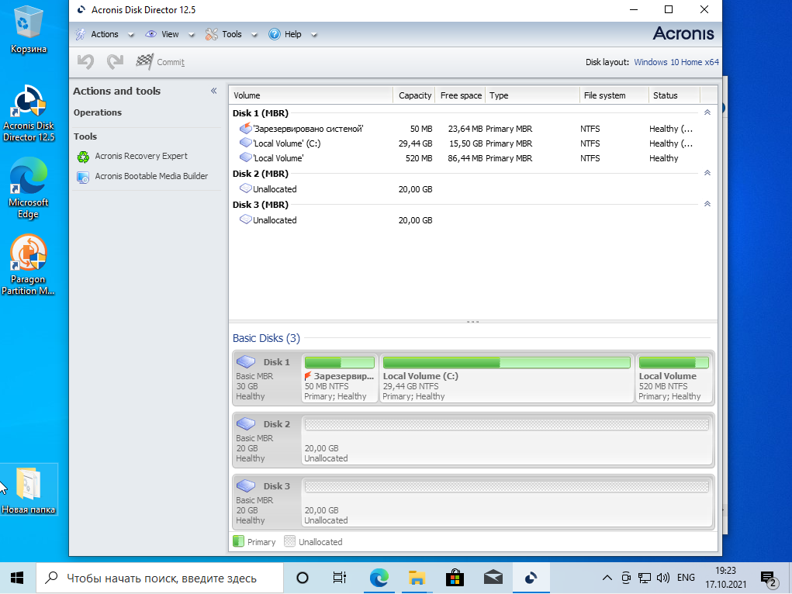
Отделяем от Disk 1 часть, присваиваем ей букву Е и файловую систему NTFS, назначаем метку «Основной». Размер тома D равен 6 ГБ.
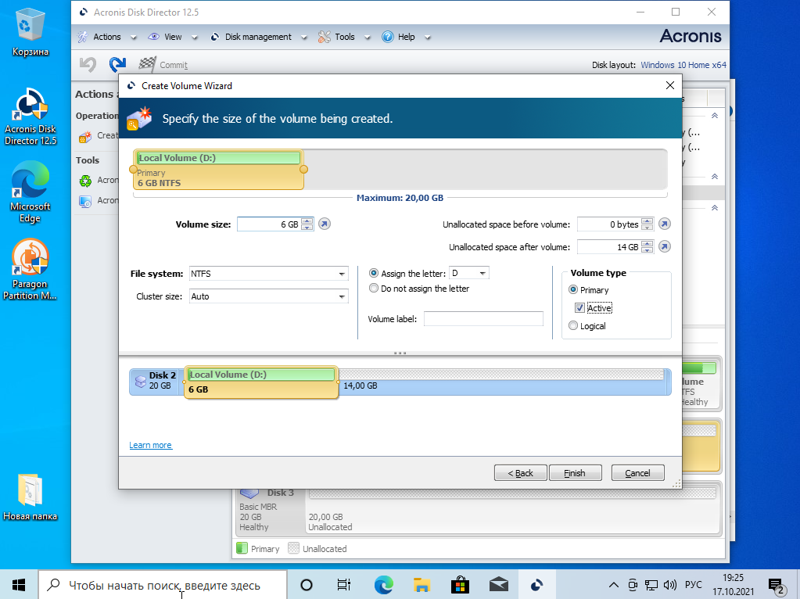
Присваиваем новой части букву E, файловую систему NTFS и назначаем метку «Основной2». Размер тома F равен 4 ГБ.
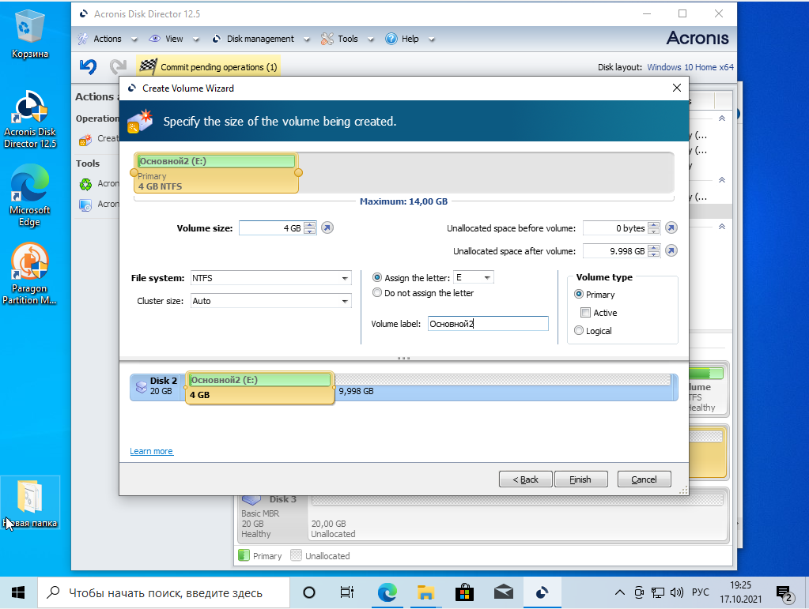
Создаем логический том на 10 ГБ. На рисунке 4.4 показаны параметры логического тома
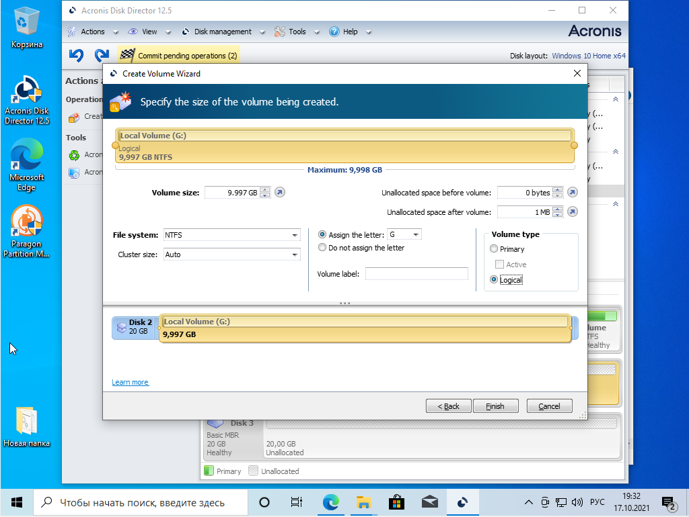
Создаем логический том на 10 ГБ. На рисунке 4.4 показаны параметры логического тома
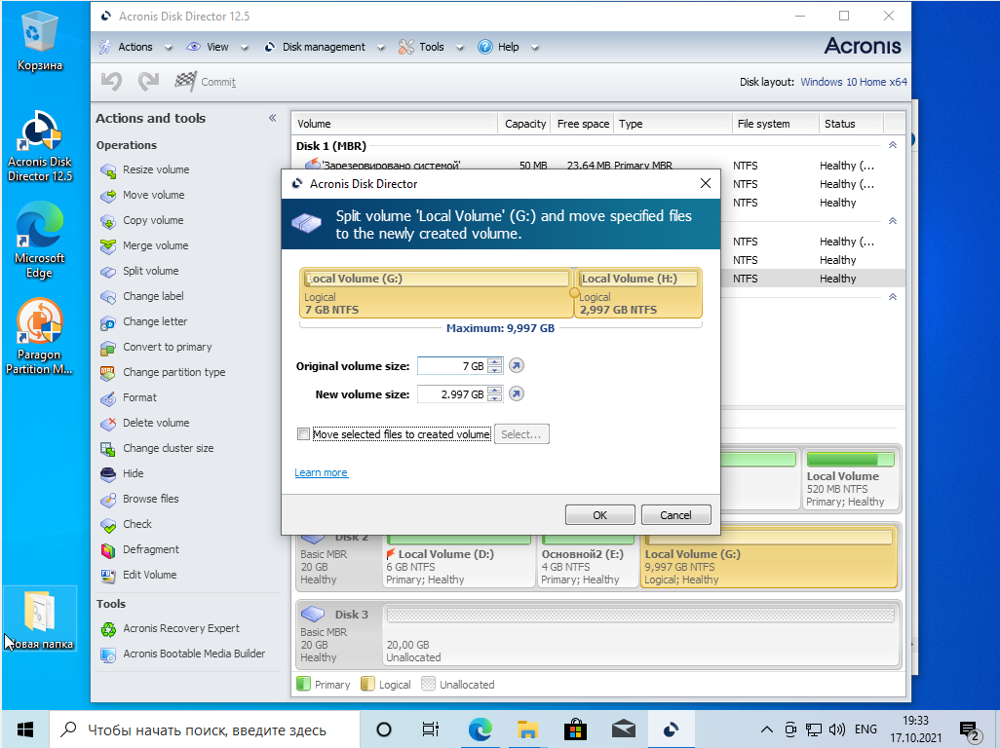
Конечный результат разбивки первого диска
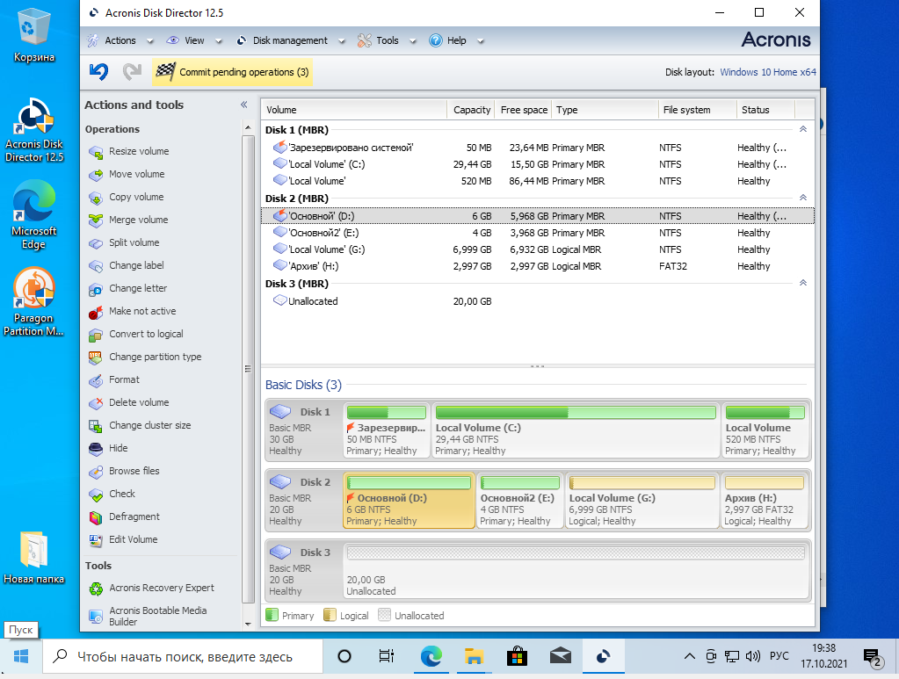
Разбивка второго диска с помощью Paragon Partition Manage.
Необходимо выбрать том, который необходимо поделить, сжать его, после чего разделить.
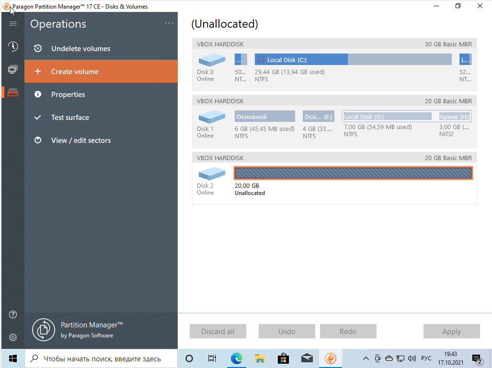
Отделяем от Disk 1 часть, присваиваем новой части букву Е и файловую систему NTFS, присваиваем метку «Основной». Размер тома D равен 6 ГБ.
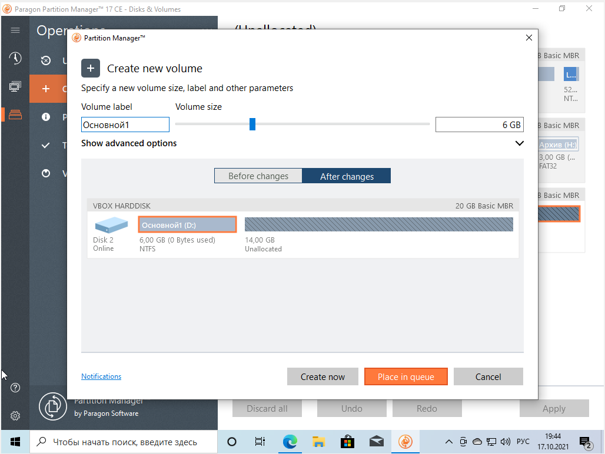
Присваиваем новой части букву I, файловую систему NTFS и присваиваем метку «Основной2». Размер тома F равен 4 ГБ.
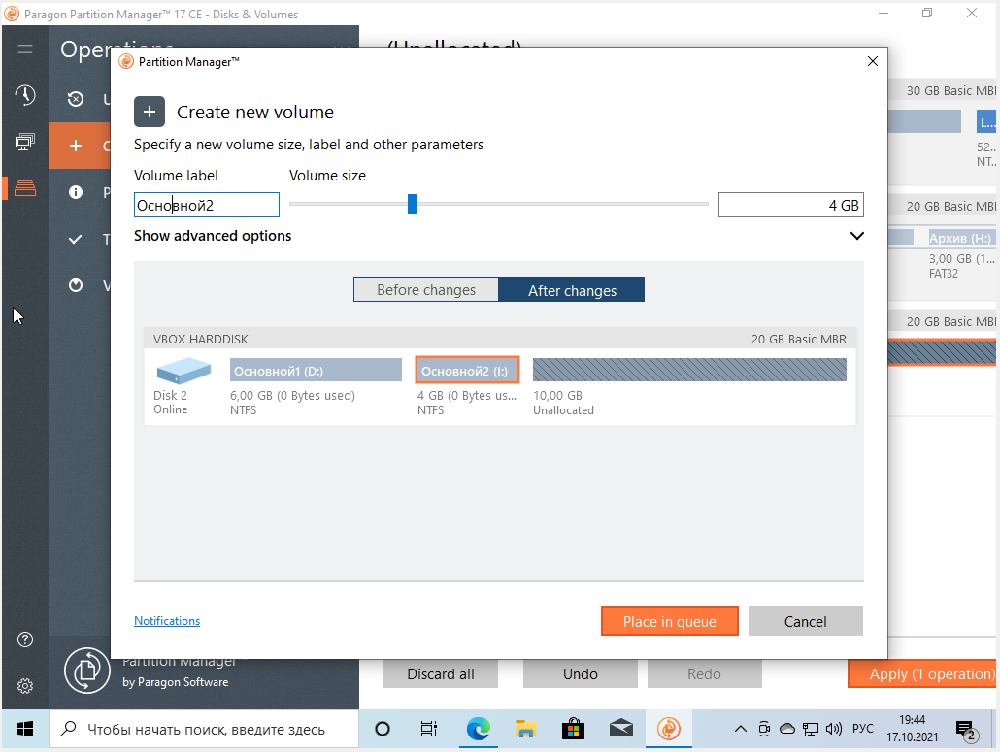
Создаем логический том на 10 ГБ.
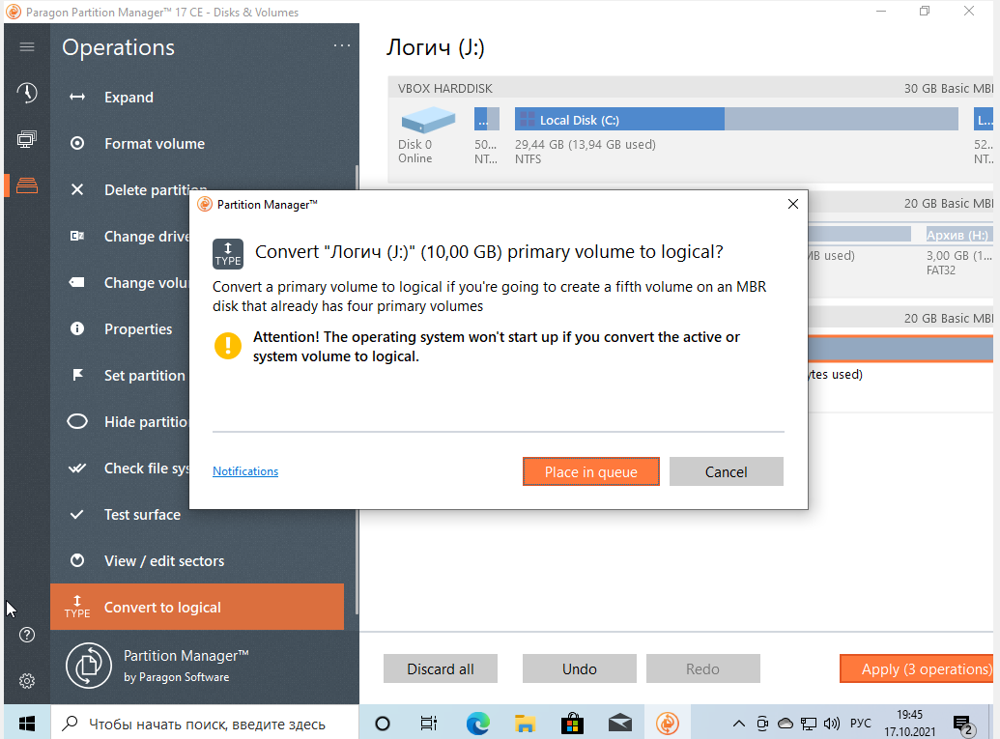
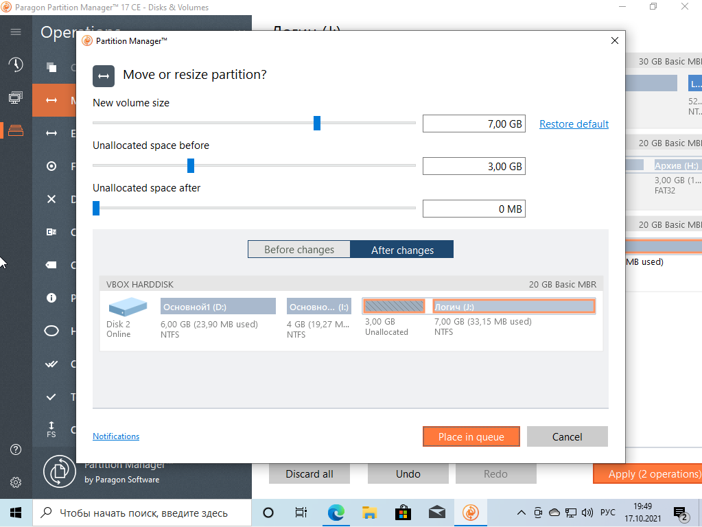
Конечный результат разбивки второго диска
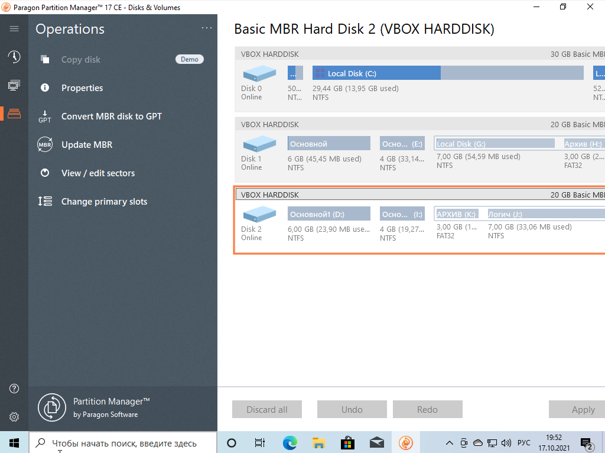